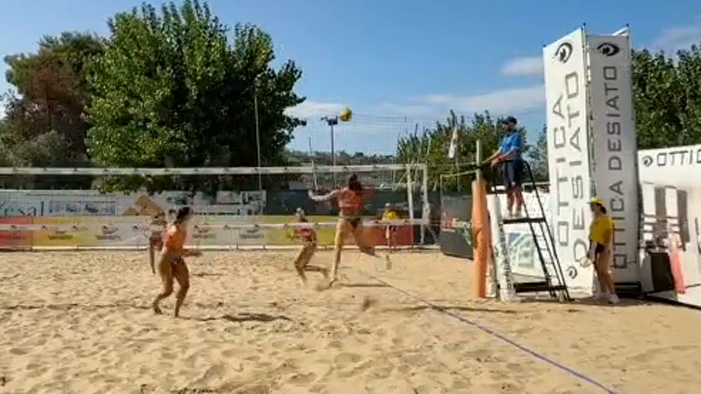
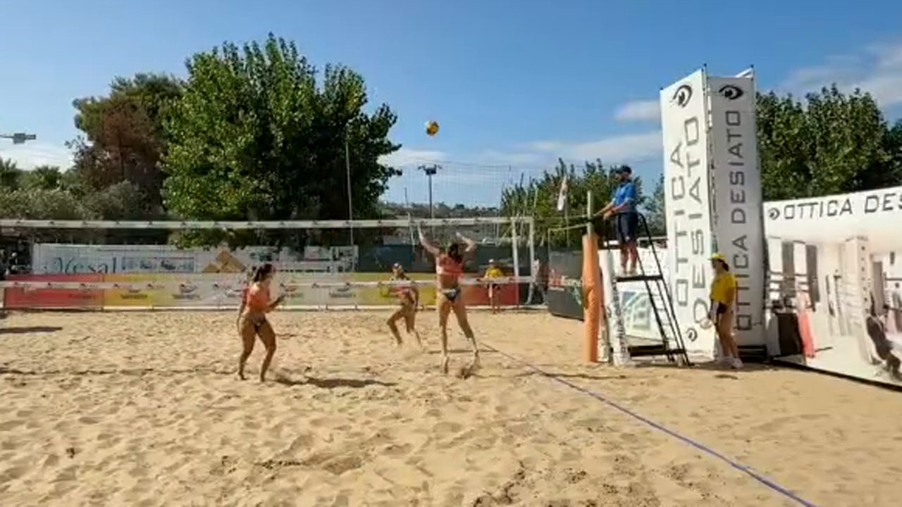

<!DOCTYPE html>
<html lang="it">
<head>
  <meta charset="UTF-8">
  <meta name="viewport" content="width=device-width, initial-scale=1.0">
  <title>Atto 6 — Tocca a voi</title>
  <link rel="preconnect" href="https://fonts.googleapis.com">
  <link rel="preconnect" href="https://fonts.gstatic.com" crossorigin>
  <link href="https://fonts.googleapis.com/css2?family=Montserrat:wght@600;700;800;900&family=Inter:wght@400;500;600;700&display=swap" rel="stylesheet">
  <script src="https://unpkg.com/react@18.3.1/umd/react.production.min.js"></script>
  <script src="https://unpkg.com/react-dom@18.3.1/umd/react-dom.production.min.js"></script>
  <script src="https://unpkg.com/@babel/standalone@7.26.10/babel.min.js"></script>
  <script>Babel.registerPreset('classic', { presets: [[Babel.availablePresets.react, { runtime: 'classic' }]] });</script>
  <style>
    :root {
      --bg: #0e1728;
      --bg-card: #16233c;
      --bg-light: #1E2E52;
      --border: #2a3a5c;
      --text: #f3f5f9;
      --text-dim: #c9d2e0;
      --text-muted: #93a0b6;
      --coral: #EF5540;
      --sun: #F6A93B;
      --teal: #1FA9A0;
      --sand: #E7C58C;
      --navy: #1E2E52;
      --success: #1FA9A0;
      --danger: #EF5540;
      --warn: #F6A93B;
      --info: #4e93b8;
      --purple: #a879c4;
      --fs-xs: clamp(13px, 0.7vw + 11px, 14px);
      --fs-sm: clamp(15px, 0.8vw + 12px, 16px);
      --fs-body: clamp(17px, 1vw + 13px, 19px);
      --fs-lead: clamp(19px, 1.3vw + 14px, 22px);
      --fs-h3: clamp(20px, 1.6vw + 14px, 26px);
      --fs-h2: clamp(26px, 2.4vw + 16px, 36px);
      --fs-h1: clamp(34px, 5vw + 18px, 58px);
      --fs-display: clamp(44px, 7vw + 20px, 84px);
      --lh-body: 1.65;
      --lh-heading: 1.18;
    }
    * { margin: 0; padding: 0; box-sizing: border-box; }
    body { background: var(--bg); color: var(--text); font-family: 'Inter', sans-serif; }
    #root { min-height: 100vh; position: relative; }
    a { color: inherit; }
    h1 { font-family: 'Montserrat', sans-serif; line-height: var(--lh-heading); }
    h2, h3 { font-family: 'Montserrat', sans-serif; line-height: var(--lh-heading); font-weight: 700; }
    h2 { font-size: var(--fs-h2); }
    h3 { font-size: var(--fs-h3); }
    p, li { line-height: var(--lh-body); }
    button { font-family: 'Inter', sans-serif; }
    .bg-texture {
      position: fixed; inset: 0; pointer-events: none; z-index: 0;
      opacity: 0.05;
      background-image: url("data:image/svg+xml,%3Csvg xmlns='http://www.w3.org/2000/svg' width='120' height='120'%3E%3Cfilter id='n'%3E%3CfeTurbulence type='fractalNoise' baseFrequency='0.9' numOctaves='2' stitchTiles='stitch'/%3E%3C/filter%3E%3Crect width='100%25' height='100%25' filter='url(%23n)'/%3E%3C/svg%3E");
    }
    .draw-surface { touch-action: none; }
    .app-shell { height: 100vh; height: 100dvh; display: flex; flex-direction: column; overflow: hidden; }
    .slide-scroll { -webkit-overflow-scrolling: touch; padding-bottom: 24px; }
    @media (max-width: 768px) {
      .slide-content { padding: 16px !important; }
      .top-bar { padding: 0 10px !important; }
      .top-bar span { font-size: var(--fs-xs) !important; }
      .top-bar > div:first-child { gap: 8px !important; }
      .bottom-bar { gap: 8px !important; padding: 0 10px !important; }
      .bottom-bar button, .bottom-bar a { padding: 10px 14px !important; font-size: var(--fs-xs) !important; min-height: 44px; }
      svg { max-width: 100%; height: auto; }
      .cards-grid { grid-template-columns: 1fr !important; }
      .seq-row { flex-wrap: wrap; }
      .label-compare { grid-template-columns: 1fr !important; }
    }
    @media (max-width: 480px) {
      .top-bar > div:first-child span:nth-child(4) { display: none; }
    }
  </style>
</head>
<body>
  <div id="root"></div>
  <script type="text/babel" data-presets="classic">
    const { useState, useEffect, useRef, useCallback } = React;

    const colors = {
      bg: '#0e1728', bgCard: '#16233c', bgLight: '#1E2E52',
      accent: '#E7C58C', accentAlt: '#f2ddb3',
      // La sabbia e' un accent chiaro: a differenza degli altri atti, il bottone pieno usa
      // testo SCURO (accentText) invece di scurire l'accent. Contrasto verificato: testo
      // #0e1728 su #E7C58C pieno = ~10.9:1 (ampiamente sopra la soglia AA di 4.5:1).
      accentSolid: '#E7C58C', accentText: '#0e1728',
      text: '#f3f5f9', textDim: '#c9d2e0', textMuted: '#93a0b6',
      border: '#2a3a5c',
      coral: '#EF5540', sun: '#F6A93B', teal: '#1FA9A0', sand: '#E7C58C', navy: '#1E2E52',
      success: '#1FA9A0', danger: '#EF5540', warn: '#F6A93B', info: '#4e93b8', purple: '#a879c4'
    };

    const ACT_LABEL = 'Atto 6';
    const ACT_TITLE = 'Tocca a voi';
    const PREV_HREF = 'atto5-cambiare-punto-di-vista.html';
    const PREV_LABEL = '← atto precedente';

    let simActive = false;

    const Box = ({ type = 'info', title, children }) => {
      const cfg = {
        info: { c: colors.info, i: 'ℹ️' },
        warn: { c: colors.warn, i: '⚠️' },
        danger: { c: colors.danger, i: '🛑' },
        tip: { c: colors.purple, i: '💡' },
        success: { c: colors.success, i: '✓' }
      };
      const { c, i } = cfg[type];
      return (
        <div style={{ background: c + '15', border: `1px solid ${c}40`, borderLeft: `4px solid ${c}`, borderRadius: '0 4px 4px 0', padding: '16px 20px', margin: '16px 0' }}>
          {title && <div style={{ display: 'flex', alignItems: 'center', gap: '8px', marginBottom: '8px', fontWeight: '700', color: c, fontSize: 'var(--fs-body)', fontFamily: "'Montserrat', sans-serif" }}>{i} {title}</div>}
          <div style={{ color: colors.textDim, lineHeight: 'var(--lh-body)', fontSize: 'var(--fs-body)' }}>{children}</div>
        </div>
      );
    };

    const Glow = ({ children, color = colors.accent }) => (
      <div style={{ position: 'relative', padding: '2px', borderRadius: '12px', background: `linear-gradient(135deg, ${color}40, transparent, ${color}20)` }}>
        <div style={{ background: colors.bgCard, borderRadius: '10px', padding: '20px' }}>{children}</div>
      </div>
    );

    // Testo del bottone: scuro quando lo sfondo e' l'accentSolid chiaro (sabbia), bianco
    // per qualunque altro sfondo esplicito (es. teal, success) che resta scuro.
    const SolidButton = ({ onClick, disabled, children, bg = colors.accentSolid, style }) => {
      const isLightBg = bg === colors.accentSolid;
      return (
        <button
          onClick={onClick}
          disabled={disabled}
          style={{
            padding: '12px 26px', minHeight: '48px', border: 'none', borderRadius: '6px',
            background: disabled ? colors.bgLight : bg,
            color: disabled ? colors.textMuted : (isLightBg ? colors.accentText : '#ffffff'),
            fontWeight: '700', fontSize: 'var(--fs-sm)', cursor: disabled ? 'not-allowed' : 'pointer',
            fontFamily: "'Montserrat', sans-serif", letterSpacing: '0.02em',
            transition: 'transform 0.15s, filter 0.15s',
            ...style
          }}
          onMouseEnter={e => { if (!disabled) e.currentTarget.style.transform = 'translateY(-2px)'; }}
          onMouseLeave={e => { e.currentTarget.style.transform = 'translateY(0)'; }}
        >{children}</button>
      );
    };

    const GhostButton = ({ onClick, disabled, active, children }) => (
      <button
        onClick={onClick}
        disabled={disabled}
        style={{
          padding: '10px 18px', minHeight: '44px', borderRadius: '6px',
          border: `1px solid ${active ? colors.accent : colors.border}`,
          background: active ? colors.accent + '25' : colors.bgLight,
          color: disabled ? colors.textMuted : (active ? colors.accent : colors.textDim),
          fontWeight: '600', fontSize: 'var(--fs-sm)', cursor: disabled ? 'not-allowed' : 'pointer'
        }}
      >{children}</button>
    );

    /* ============================================================
       DATI DAI FOTOGRAMMI REALI (da assets/frames/manifest.json)
       ============================================================ */

    // Box della schiacciata, rimappato dal fotogramma intero al ritaglio "zoom" — stessa
    // formula/costante dell'Atto 1 (manifest.json → gestures.SPIKE):
    //   locale = (assoluto - finestra_origine) / finestra_dimensione
    const SPIKE_TRUE_BOX = { x: 0.4285, y: 0.2471, w: 0.1441, h: 0.5103 };

    // I 7 fotogrammi della sequenza attorno al contatto (manifest.json → sequence.frames),
    // offset in fotogrammi rispetto all'etichetta originale (offset 0 = seq_3).
    const SEQ_FRAMES = [
      { file: 'assets/frames/seq_0_zoom.jpg', offset: -6 },
      { file: 'assets/frames/seq_1_zoom.jpg', offset: -4 },
      { file: 'assets/frames/seq_2_zoom.jpg', offset: -2 },
      { file: 'assets/frames/seq_3_zoom.jpg', offset: 0 },
      { file: 'assets/frames/seq_4_zoom.jpg', offset: 2 },
      { file: 'assets/frames/seq_5_zoom.jpg', offset: 4 },
      { file: 'assets/frames/seq_6_zoom.jpg', offset: 6 },
    ];
    // manifest.json → sequence.contact_offset_verified: il contatto mano-palla verificato
    // a vista cade a +2 fotogrammi rispetto all'etichetta originale (offset 0, seq_3).
    const CONTACT_OFFSET = 2;

    /* ============================================================
       SLIDE 3 — Ciclo human-in-the-loop
       ============================================================ */

    const LOOP_STAGES = [
      { k: 'propone', label: 'Il sistema propone', short: 'Propone', icon: '🤖', text: "Analizza il video e propone gesti, tocchi e punteggio: una prima bozza, non un verdetto." },
      { k: 'corregge', label: 'Una persona corregge', short: 'Corregge', icon: '✍️', text: 'Chi guarda il video conferma quello che è giusto e corregge quello che non lo è.' },
      { k: 'dati', label: 'Le correzioni diventano dati', short: 'Diventano dati', icon: '📋', text: 'Ogni correzione è un esempio in più: la stessa materia prima con cui il modello ha imparato la prima volta.' },
      { k: 'riaddestra', label: 'Il modello riaddestrato propone meglio', short: 'Riaddestra', icon: '🔁', text: 'Con più esempi corretti da persone, la proposta successiva del sistema è più precisa. Il ciclo ricomincia.' },
    ];

    function LoopDiagram() {
      const [active, setActive] = useState(0);
      const R = 140, CX = 220, CY = 205, NR = 48;
      const positions = LOOP_STAGES.map((_, i) => {
        const angle = (Math.PI / 2) + (i * Math.PI / 2); // parte in alto, orario
        return { x: CX + R * Math.cos(angle), y: CY - R * Math.sin(angle) };
      });
      // Accorcia l'inizio/fine della curva lungo la sua tangente di NR (raggio del cerchio),
      // così la freccia termina visibilmente sul bordo del cerchio invece che sotto, al centro.
      const trimStart = (p0, ctrl, r) => {
        const ux = ctrl.x - p0.x, uy = ctrl.y - p0.y;
        const norm = Math.hypot(ux, uy) || 1;
        return { x: p0.x + (ux / norm) * r, y: p0.y + (uy / norm) * r };
      };
      const trimEnd = (ctrl, p1, r) => {
        const ux = p1.x - ctrl.x, uy = p1.y - ctrl.y;
        const norm = Math.hypot(ux, uy) || 1;
        return { x: p1.x - (ux / norm) * r, y: p1.y - (uy / norm) * r };
      };
      return (
        <div>
          <div style={{ display: 'flex', flexWrap: 'wrap', gap: '20px', alignItems: 'center', justifyContent: 'center' }}>
            <svg viewBox="0 0 440 420" style={{ width: 'min(100%, 420px)', height: 'auto' }}>
              <defs>
                <marker id="loop-arrow" markerWidth="8" markerHeight="8" refX="6" refY="4" orient="auto">
                  <path d="M0,0 L8,4 L0,8 Z" fill={colors.accent} />
                </marker>
              </defs>
              {positions.map((p, i) => {
                const q = positions[(i + 1) % positions.length];
                const mx = (p.x + q.x) / 2, my = (p.y + q.y) / 2;
                const dx = q.x - p.x, dy = q.y - p.y;
                const nx = -dy, ny = dx;
                const norm = Math.hypot(nx, ny) || 1;
                const bend = 24;
                const cxp = mx + (nx / norm) * bend, cyp = my + (ny / norm) * bend;
                const ctrl = { x: cxp, y: cyp };
                const start = trimStart(p, ctrl, NR);
                const end = trimEnd(ctrl, q, NR);
                return <path key={i} d={`M ${start.x} ${start.y} Q ${cxp} ${cyp} ${end.x} ${end.y}`} fill="none"
                  stroke={active === i ? colors.accent : colors.border} strokeWidth={active === i ? 3 : 2}
                  markerEnd="url(#loop-arrow)" />;
              })}
              {positions.map((p, i) => (
                <g key={i} transform={`translate(${p.x},${p.y})`} style={{ cursor: 'pointer' }} onClick={() => setActive(i)}>
                  <circle r={NR} fill={active === i ? colors.accent + '30' : colors.bgCard} stroke={active === i ? colors.accent : colors.border} strokeWidth={active === i ? 3 : 1.5} />
                  <text textAnchor="middle" y="-14" fontSize="20">{LOOP_STAGES[i].icon}</text>
                  <text textAnchor="middle" y="10" fontSize="11" fontWeight={active === i ? 700 : 600} fill={active === i ? colors.text : colors.textDim} style={{ fontFamily: "'Montserrat', sans-serif" }}>
                    {LOOP_STAGES[i].short.split(' ').map((w, wi) => <tspan key={wi} x="0" dy={wi === 0 ? 0 : 13}>{w}</tspan>)}
                  </text>
                </g>
              ))}
            </svg>
            <div style={{ flex: '1 1 260px', minWidth: '240px' }}>
              <Box type="tip" title={LOOP_STAGES[active].label}>{LOOP_STAGES[active].text}</Box>
              <div style={{ display: 'flex', gap: '8px', flexWrap: 'wrap' }}>
                {LOOP_STAGES.map((s, i) => (
                  <GhostButton key={s.k} active={active === i} onClick={() => setActive(i)}>{i + 1}. {s.label}</GhostButton>
                ))}
              </div>
            </div>
          </div>
        </div>
      );
    }

    /* ============================================================
       SLIDE 5 — Etichetta buona vs errori tipici
       ============================================================ */

    function LabelCompare() {
      return (
        <div className="label-compare" style={{ display: 'grid', gridTemplateColumns: '1fr 1fr', gap: '20px' }}>
          <div>
            <div style={{ position: 'relative', display: 'inline-block', lineHeight: 0, maxWidth: '100%', borderRadius: '8px', overflow: 'hidden', border: `2px solid ${colors.success}` }}>
              
              <div style={{ position: 'absolute', left: `${SPIKE_TRUE_BOX.x * 100}%`, top: `${SPIKE_TRUE_BOX.y * 100}%`, width: `${SPIKE_TRUE_BOX.w * 100}%`, height: `${SPIKE_TRUE_BOX.h * 100}%`, border: `2px solid ${colors.success}`, background: colors.success + '20' }} />
              <div style={{ position: 'absolute', left: `${SPIKE_TRUE_BOX.x * 100}%`, top: `${Math.max(0, SPIKE_TRUE_BOX.y * 100 - 9)}%`, background: colors.success, color: colors.bg, fontSize: '11px', fontWeight: 700, padding: '2px 6px', borderRadius: '3px', fontFamily: "'Montserrat', sans-serif" }}>Schiacciata ✓</div>
            </div>
            <Box type="success" title="Etichetta buona">Rettangolo stretto attorno a chi colpisce e alla palla, nel fotogramma esatto del contatto, classe corretta.</Box>
          </div>
          <div>
            <div style={{ position: 'relative', display: 'inline-block', lineHeight: 0, maxWidth: '100%', borderRadius: '8px', overflow: 'hidden', border: `2px solid ${colors.danger}` }}>
              
              <div style={{ position: 'absolute', left: '12%', top: '8%', width: '78%', height: '84%', border: `2px dashed ${colors.danger}`, background: colors.danger + '18' }} />
              <div style={{ position: 'absolute', left: '12%', top: '2%', background: colors.danger, color: colors.bg, fontSize: '11px', fontWeight: 700, padding: '2px 6px', borderRadius: '3px', fontFamily: "'Montserrat', sans-serif" }}>"Bagher"? ✗</div>
            </div>
            <Box type="danger" title="Errori tipici (ricreati)">
              <ul style={{ paddingLeft: '18px', margin: 0 }}>
                <li>rettangolo troppo largo: include mezzo campo, non solo chi tocca la palla;</li>
                <li>fotogramma sbagliato: la palla sta ancora arrivando, il contatto non è ancora avvenuto;</li>
                <li>classe sbagliata: non è il gesto che sembra a prima vista.</li>
              </ul>
            </Box>
          </div>
        </div>
      );
    }

    /* ============================================================
       SLIDE 8 — Simulatore "Il fotogramma giusto"
       ============================================================ */

    function frameFeedback(offset) {
      if (offset === CONTACT_OFFSET) {
        return { kind: 'success', text: 'Esatto! Qui la mano tocca davvero la palla: è questo il fotogramma da etichettare.' };
      }
      if (offset === 0) {
        return { kind: 'warn', text: 'Molto vicino — infatti questa era l\'etichetta originale usata in questa demo. Ma guardando bene, il contatto avviene 2 fotogrammi dopo: un esempio reale di etichetta in anticipo.' };
      }
      if (offset < CONTACT_OFFSET) {
        return { kind: 'danger', text: 'Troppo presto: la palla sta ancora arrivando, il contatto non è ancora avvenuto.' };
      }
      return { kind: 'danger', text: 'Troppo tardi: il contatto è già avvenuto in un fotogramma precedente, la palla è già ripartita.' };
    }

    function FrameSimulator() {
      const [picked, setPicked] = useState(null);
      const fb = picked !== null ? frameFeedback(picked) : null;
      const pickedFrame = picked !== null ? SEQ_FRAMES.find(f => f.offset === picked) : null;

      return (
        <div>
          <p style={{ color: colors.textDim, fontSize: 'var(--fs-body)', marginBottom: '14px' }}>
            Sette fotogrammi ravvicinati della stessa azione, uno ogni due. Uno solo è il momento giusto da etichettare come schiacciata: clicca quello che ti sembra il contatto.
          </p>
          <div className="seq-row" style={{ display: 'flex', gap: '8px', justifyContent: 'center', marginBottom: '16px' }}>
            {SEQ_FRAMES.map(f => (
              <button key={f.offset} onClick={() => setPicked(f.offset)}
                style={{
                  padding: '4px', minWidth: '44px', minHeight: '44px', borderRadius: '8px', cursor: 'pointer',
                  border: `2px solid ${picked === f.offset ? colors.accent : colors.border}`,
                  background: colors.bgCard
                }}>
                
                <div style={{ fontSize: '11px', color: colors.textMuted, marginTop: '4px' }}>{f.offset > 0 ? '+' : ''}{f.offset}</div>
              </button>
            ))}
          </div>

          {pickedFrame && (
            <div style={{ textAlign: 'center', marginBottom: '12px' }}>
              
            </div>
          )}

          {fb && <Box type={fb.kind}>{fb.text}</Box>}

          {picked !== null && (
            <div style={{ textAlign: 'center', marginTop: '10px' }}>
              <GhostButton onClick={() => setPicked(null)}>Riprova</GhostButton>
            </div>
          )}

          <Box type="tip" title="Un'ammissione onesta">
            L'etichetta originale di questa demo era proprio sul fotogramma "0": in anticipo di due fotogrammi rispetto al contatto reale. Nessuno se n'era accorto finché qualcuno non ha guardato la sequenza fotogramma per fotogramma. È esattamente il motivo per cui serve un occhio umano attento.
          </Box>
        </div>
      );
    }

    /* ============================================================
       SLIDE 9 — Quiz finale
       ============================================================ */

    const QUIZ = [
      { q: 'Il sistema segna una battuta a metà scambio. Che cosa fai?',
        opts: ['La correggi con il gesto reale (es. bagher o schiacciata).', 'La lasci così: il sistema di solito ha ragione.', 'Cancelli tutto lo scambio.', 'Aumenti la soglia di confidenza.'],
        correct: 0,
        exp: 'Una battuta può avvenire solo come primo tocco dello scambio, da fondo campo. A metà scambio è quasi sempre un errore: si corregge con il gesto vero.' },
      { q: 'Un modello migliora sulla validazione e peggiora sul test. Di quale ti fidi?',
        opts: ['Della validazione, è più recente.', 'Del test: è il giudice finale, mai visto durante la messa a punto.', 'Di nessuno dei due.', 'Della media dei due.'],
        correct: 1,
        exp: 'La validazione guida le scelte durante lo sviluppo ed è spesso ottimista. Il test, mai visto prima, dice come va davvero.' },
      { q: 'Perché addestrare un modello sulle sue stesse etichette non basta?',
        opts: ['Perché costa troppa energia.', 'Perché le etichette diventano troppo grandi da salvare.', 'Perché il modello impara più lentamente.', 'Perché è circolare: le etichette ereditano gli stessi punti ciechi del modello che le ha generate.'],
        correct: 3,
        exp: 'Uno studente non può superare un maestro che gli insegna solo ciò che già sa: i casi difficili restano senza etichetta.' },
      { q: 'In quale fotogramma metti l\'etichetta di una schiacciata?',
        opts: ['In un fotogramma a scelta, purché vicino.', 'Nel fotogramma subito prima del salto.', 'Nel fotogramma del contatto mano-palla.', 'In un fotogramma a caso tra inizio e fine del gesto.'],
        correct: 2,
        exp: 'Il tocco è il momento in cui la palla in volo cambia traiettoria: è quel fotogramma, e non un altro, a portare l\'etichetta.' },
      { q: 'Abbassi la soglia di confidenza: cosa succede a precisione e richiamo?',
        opts: ['La precisione scende, il richiamo sale.', 'Salgono entrambe.', 'Scendono entrambe.', 'La precisione sale, il richiamo scende.'],
        correct: 0,
        exp: 'Con una soglia più bassa il sistema propone più azioni: ne trova di più (richiamo su) ma tra queste ce ne sono più sbagliate (precisione giù).' },
      { q: 'La palla sparisce dietro il braccio al momento del contatto: come si capisce dov\'era il tocco?',
        opts: ['Non si può sapere.', 'Dall\'incrocio delle due parabole (prima e dopo il colpo), prolungate anche dove la palla non si vede.', 'Si prende la posizione media dell\'intero scambio.', 'Si aspetta il fotogramma successivo e si usa quella posizione.'],
        correct: 1,
        exp: 'La fisica non si ferma quando la palla è nascosta: le due traiettorie prolungate si incrociano proprio nel punto del colpo.' },
      { q: 'Un oggetto rotondo di colore diverso vicino alla rete è la palla?',
        opts: ['Sì, se ha una forma simile.', 'Sì, se si muove velocemente.', 'Dipende da quanto è vicino alla rete.', 'No: il colore della palla resta lo stesso per tutta la partita, un colore diverso non lo è.'],
        correct: 3,
        exp: 'Il colore della palla è una delle regole più semplici e affidabili: se cambia colore, non è la palla.' },
      { q: 'Due tocchi consecutivi dello stesso giocatore: quando è possibile?',
        opts: ['Dopo un muro.', 'Mai, è sempre un errore.', 'Solo in battuta.', 'Solo nell\'ultimo tocco della squadra.'],
        correct: 0,
        exp: 'Dopo un muro lo stesso giocatore può toccare di nuovo: è una delle poche eccezioni alla regola "mai due tocchi di fila".' },
      { q: 'Una regola migliora un video ma peggiora il set di verifica. Che cosa significa?',
        opts: ['Il set di verifica è sbagliato.', 'Bisogna abbassare tutte le soglie.', 'La regola non generalizza: era tarata su un caso particolare.', 'Il video è di scarsa qualità.'],
        correct: 2,
        exp: 'Una regola tarata su un solo tipo di ripresa può sistemare quel caso e rompere tutti gli altri: serve verificarla sul set completo.' },
      { q: 'Il sistema propone un gesto "da verificare". Perché ha confidenza bassa apposta?',
        opts: ['È un bug da correggere.', 'Per chiedere conferma umana nei casi incerti, invece di sbagliare in silenzio.', 'Per risparmiare risorse di calcolo.', 'Perché il modello è vecchio.'],
        correct: 1,
        exp: 'Segnalare l\'incertezza è più onesto che decidere da soli: è un invito esplicito a un controllo umano.' },
    ];

    function Quiz() {
      const [idx, setIdx] = useState(0);
      const [selected, setSelected] = useState(null);
      const [score, setScore] = useState(0);
      const [done, setDone] = useState(false);

      // Il quiz si gioca solo col mouse/touch (click sulle opzioni): niente tasti numerici
      // o spaziatrice da catturare, quindi non blocchiamo la navigazione globale (frecce/ESC
      // restano sempre utilizzabili per sfogliare o uscire dalla slide).
      const question = QUIZ[idx];

      const choose = (i) => {
        if (selected !== null) return;
        setSelected(i);
        if (i === question.correct) setScore(s => s + 1);
      };

      const next = () => {
        if (idx + 1 >= QUIZ.length) { setDone(true); return; }
        setIdx(i => i + 1);
        setSelected(null);
      };

      const restart = () => { setIdx(0); setSelected(null); setScore(0); setDone(false); };

      if (done) {
        return (
          <Box type={score >= 8 ? 'success' : score >= 5 ? 'warn' : 'danger'} title="Risultato">
            <p style={{ fontSize: 'var(--fs-h3)', fontFamily: "'Montserrat', sans-serif", color: colors.text, marginBottom: '10px' }}>{score} / {QUIZ.length}</p>
            <p>{score >= 8 ? 'Occhio da etichettatore esperto: hai colto quasi tutte le sottigliezze.' : score >= 5 ? 'Buona base: qualche regola merita un ripasso.' : 'Vale la pena rileggere le regole delle slide precedenti prima di iniziare a etichettare.'}</p>
            <div style={{ marginTop: '14px' }}><SolidButton onClick={restart}>Riprova il quiz</SolidButton></div>
          </Box>
        );
      }

      return (
        <div>
          <div style={{ display: 'flex', justifyContent: 'space-between', color: colors.textMuted, fontSize: 'var(--fs-sm)', marginBottom: '10px' }}>
            <span>Domanda {idx + 1} di {QUIZ.length}</span>
            <span>Punteggio: {score}</span>
          </div>
          <Glow>
            <p style={{ color: colors.text, fontSize: 'var(--fs-body)', fontWeight: 700, marginBottom: '14px' }}>{question.q}</p>
            <div style={{ display: 'flex', flexDirection: 'column', gap: '10px' }}>
              {question.opts.map((opt, i) => {
                let bg = colors.bgLight, border = colors.border, color = colors.textDim;
                if (selected !== null) {
                  if (i === question.correct) { bg = colors.success + '25'; border = colors.success; color = colors.text; }
                  else if (i === selected) { bg = colors.danger + '25'; border = colors.danger; color = colors.text; }
                }
                return (
                  <button key={i} onClick={() => choose(i)} disabled={selected !== null}
                    style={{
                      textAlign: 'left', padding: '12px 16px', minHeight: '48px', borderRadius: '6px',
                      border: `1px solid ${border}`, background: bg, color,
                      cursor: selected !== null ? 'default' : 'pointer', fontSize: 'var(--fs-sm)', lineHeight: 1.4
                    }}>
                    {opt}
                  </button>
                );
              })}
            </div>
          </Glow>
          {selected !== null && (
            <>
              <Box type={selected === question.correct ? 'success' : 'danger'} title={selected === question.correct ? 'Esatto' : 'Non proprio'}>
                {question.exp}
              </Box>
              <div style={{ textAlign: 'center', marginTop: '10px' }}>
                <SolidButton onClick={next}>{idx + 1 >= QUIZ.length ? 'Vedi il punteggio' : 'Prossima domanda →'}</SolidButton>
              </div>
            </>
          )}
        </div>
      );
    }

    /* ============================================================
       COMPONENTI DI CONTENUTO (card statiche/interattive)
       ============================================================ */

    function WhyHumanCards() {
      const items = [
        { icon: '🔁', title: "L'auto-etichettatura è circolare", text: 'Un modello addestrato sulle proprie etichette eredita i propri punti ciechi (Atto 5).' },
        { icon: '📐', title: 'Nuove angolazioni, occhi nuovi', text: 'Il modello non generalizza da solo a una telecamera mai vista: servono esempi veri.' },
        { icon: '❓', title: 'Le regole sono ipotesi', text: 'Le regole di dominio non sono verità assolute: vanno confermate sui dati, non date per scontate.' },
        { icon: '📏', title: 'Senza verità non si misura', text: 'Senza dati di riferimento etichettati a mano non si può dire se una modifica migliora davvero (Atto 3).' },
        { icon: '💰', title: 'Correggere costa meno che creare', text: 'Correggere una proposta del sistema costa molto meno che etichettare tutto da zero.' },
      ];
      return (
        <div className="cards-grid" style={{ display: 'grid', gridTemplateColumns: 'repeat(auto-fit, minmax(200px, 1fr))', gap: '14px' }}>
          {items.map((it, i) => (
            <div key={i} style={{ background: colors.bgCard, border: `1px solid ${colors.border}`, borderRadius: '10px', padding: '16px' }}>
              <div style={{ fontSize: '26px', marginBottom: '8px' }}>{it.icon}</div>
              <div style={{ fontFamily: "'Montserrat', sans-serif", fontWeight: 700, color: colors.accent, marginBottom: '6px', fontSize: 'var(--fs-sm)' }}>{it.title}</div>
              <div style={{ color: colors.textDim, fontSize: 'var(--fs-sm)' }}>{it.text}</div>
            </div>
          ))}
        </div>
      );
    }

    function WhoTeachesCards() {
      const [open, setOpen] = useState(null);
      const items = [
        { icon: '🧑‍🏫', title: 'Allenatori', text: 'Conoscono il gioco meglio di chiunque: riconoscono al volo un gesto ambiguo o una scelta tattica.' },
        { icon: '🎓', title: 'Studenti', text: 'Imparano come funziona davvero un sistema di intelligenza artificiale mentre contribuiscono con dati veri.' },
        { icon: '🏐', title: 'Appassionati e giocatori', text: 'Vedono dettagli di gioco che sfuggono a chi il volley non lo pratica.' },
      ];
      return (
        <div>
          <div className="cards-grid" style={{ display: 'grid', gridTemplateColumns: 'repeat(auto-fit, minmax(200px, 1fr))', gap: '14px' }}>
            {items.map((it, i) => (
              <button key={i} onClick={() => setOpen(open === i ? null : i)} style={{
                textAlign: 'left', cursor: 'pointer', background: colors.bgCard,
                border: `1px solid ${open === i ? colors.accent : colors.border}`, borderRadius: '10px', padding: '18px', minHeight: '44px'
              }}>
                <div style={{ fontSize: '30px', marginBottom: '8px' }}>{it.icon}</div>
                <div style={{ fontFamily: "'Montserrat', sans-serif", fontWeight: 700, color: colors.text, fontSize: 'var(--fs-body)' }}>{it.title}</div>
                {open === i && <div style={{ color: colors.textDim, fontSize: 'var(--fs-sm)', marginTop: '10px' }}>{it.text}</div>}
              </button>
            ))}
          </div>
          <Box type="tip" title="Serve occhio, non codice">Serve occhio, attenzione e pazienza. Non serve saper programmare.</Box>
        </div>
      );
    }

    /* ============================================================
       SLIDES
       ============================================================ */

    const LESSONS = [
      'Un buon progetto nasce da una domanda concreta di qualcuno che ha un problema vero.',
      'Prima si fa funzionare il tubo da un capo all\'altro, poi si ottimizza. Un modello che nessuno usa non riceve feedback.',
      'Un risultato che "sembra giusto" non è un risultato. Decidono i dati di verifica, misurati bene.',
      'La conoscenza del dominio spesso batte l\'algoritmo generico. E un errore a monte si moltiplica a valle.',
      'Quando tutto dipende dall\'anello debole, conviene cambiare la catena. Ciò che scartiamo come rumore a volte è l\'informazione più importante.',
      'L\'intelligenza artificiale impara da persone. La qualità di quello che sa dipende dalla qualità di chi le insegna.',
    ];

    const slides = [
      // 1 - Titolo
      () => (
        <div style={{ textAlign: 'center', padding: '60px 30px', display: 'flex', flexDirection: 'column', alignItems: 'center', justifyContent: 'center', minHeight: '70vh' }}>
          <div style={{ fontSize: 'var(--fs-display)', marginBottom: '20px' }}>✍️</div>
          <div style={{ fontSize: 'var(--fs-xs)', color: colors.accent, textTransform: 'uppercase', letterSpacing: '3px', marginBottom: '16px', fontWeight: '700' }}>{ACT_LABEL}</div>
          <h1 style={{ fontSize: 'var(--fs-h1)', fontWeight: '700', background: `linear-gradient(135deg, ${colors.accent}, ${colors.accentAlt})`, WebkitBackgroundClip: 'text', WebkitTextFillColor: 'transparent', marginBottom: '16px' }}>{ACT_TITLE}</h1>
          <p style={{ fontSize: 'var(--fs-lead)', color: colors.textDim, maxWidth: '620px', lineHeight: 'var(--lh-body)' }}>
            Il pezzo che manca non è un algoritmo. Sono le persone.
          </p>
        </div>
      ),

      // 2 - Perché serve l'etichettatura umana
      () => (
        <div style={{ padding: '30px' }}>
          <h2 style={{ color: colors.accent, marginBottom: '20px', display: 'flex', alignItems: 'center', gap: '12px' }}>
            <span style={{ fontSize: '28px' }}>🙋</span> Perché serve l'etichettatura umana
          </h2>
          <WhyHumanCards />
        </div>
      ),

      // 3 - Il ciclo human-in-the-loop
      () => (
        <div style={{ padding: '30px' }}>
          <h2 style={{ color: colors.accent, marginBottom: '20px', display: 'flex', alignItems: 'center', gap: '12px' }}>
            <span style={{ fontSize: '28px' }}>🔁</span> Il ciclo human-in-the-loop
          </h2>
          <p style={{ color: colors.textDim, fontSize: 'var(--fs-body)', marginBottom: '10px' }}>Clicca ogni fase per leggerne il senso.</p>
          <LoopDiagram />
        </div>
      ),

      // 4 - Chi può insegnare alla macchina
      () => (
        <div style={{ padding: '30px' }}>
          <h2 style={{ color: colors.accent, marginBottom: '20px', display: 'flex', alignItems: 'center', gap: '12px' }}>
            <span style={{ fontSize: '28px' }}>🧑‍🤝‍🧑</span> Chi può insegnare alla macchina
          </h2>
          <WhoTeachesCards />
        </div>
      ),

      // 5 - Cos'è un'etichetta ben fatta
      () => (
        <div style={{ padding: '30px' }}>
          <h2 style={{ color: colors.accent, marginBottom: '20px', display: 'flex', alignItems: 'center', gap: '12px' }}>
            <span style={{ fontSize: '28px' }}>🎯</span> Cos'è un'etichetta ben fatta
          </h2>
          <p style={{ color: colors.textDim, fontSize: 'var(--fs-body)', marginBottom: '14px' }}>
            Un fotogramma, un gesto, un giocatore: un rettangolo stretto, nel momento giusto.
          </p>
          <LabelCompare />
        </div>
      ),

      // 6 - Regole (1/2)
      () => (
        <div style={{ padding: '30px' }}>
          <h2 style={{ color: colors.accent, marginBottom: '20px', display: 'flex', alignItems: 'center', gap: '12px' }}>
            <span style={{ fontSize: '28px' }}>📖</span> Le regole del beach volley per chi etichetta (1/2)
          </h2>
          <Box type="info" title="Tocco">Il fotogramma in cui la palla in volo cambia traiettoria. Senza contatto con la palla non c'è azione, anche se la posizione del corpo "sembra" un gesto.</Box>
          <Box type="info" title="Battuta">Solo come primo tocco dello scambio, da fondo campo.</Box>
          <Box type="info" title="Sequenza di una squadra">Bagher → alzata → attacco, al massimo 3 tocchi.</Box>
          <Box type="info" title="Muro">Tocco a rete su un attacco avversario. Dopo un muro lo stesso giocatore può toccare di nuovo.</Box>
        </div>
      ),

      // 7 - Regole (2/2)
      () => (
        <div style={{ padding: '30px' }}>
          <h2 style={{ color: colors.accent, marginBottom: '20px', display: 'flex', alignItems: 'center', gap: '12px' }}>
            <span style={{ fontSize: '28px' }}>📖</span> Le regole per chi etichetta (2/2)
          </h2>
          <Box type="info" title="Bagher">Il tocco basso che non è battuta, alzata, attacco o muro. Si etichetta il gesto; il ruolo (ricezione, difesa) si ricava dal contesto.</Box>
          <Box type="info" title="Scambio">Inizia con la battuta, finisce quando la palla smette di volare.</Box>
          <Box type="info" title="Palla">Stesso colore per tutta la partita: un oggetto di colore diverso non è la palla.</Box>
          <Box type="info" title="Giocatori">I compagni hanno la stessa divisa: si seguono per posizione e movimento, non per aspetto.</Box>
          <Box type="info" title="Punteggio">Se c'è il tabellone, la verità è quella.</Box>
        </div>
      ),

      // 8 - Simulatore "Il fotogramma giusto"
      () => (
        <div style={{ padding: '30px' }}>
          <h2 style={{ color: colors.accent, marginBottom: '20px', display: 'flex', alignItems: 'center', gap: '12px' }}>
            <span style={{ fontSize: '28px' }}>🖼️</span> Simulatore — Il fotogramma giusto
          </h2>
          <FrameSimulator />
        </div>
      ),

      // 9 - Quiz finale
      () => (
        <div style={{ padding: '30px' }}>
          <h2 style={{ color: colors.accent, marginBottom: '20px', display: 'flex', alignItems: 'center', gap: '12px' }}>
            <span style={{ fontSize: '28px' }}>🧠</span> Quiz finale — Allenatore o macchina?
          </h2>
          <Quiz />
        </div>
      ),

      // 10 - Chiusura del viaggio
      () => (
        <div style={{ padding: '30px', textAlign: 'center' }}>
          <h2 style={{ color: colors.accent, marginBottom: '20px' }}>Le sei lezioni del viaggio</h2>
          <div style={{ display: 'flex', flexDirection: 'column', gap: '10px', textAlign: 'left', maxWidth: '760px', margin: '0 auto 20px' }}>
            {LESSONS.map((l, i) => (
              <div key={i} style={{ display: 'flex', gap: '12px', alignItems: 'baseline', background: colors.bgCard, border: `1px solid ${colors.border}`, borderRadius: '8px', padding: '12px 16px' }}>
                <span style={{ color: colors.accent, fontWeight: 700, fontFamily: "'Montserrat', sans-serif" }}>Atto {i + 1}</span>
                <span style={{ color: colors.textDim, fontSize: 'var(--fs-sm)' }}>{l}</span>
              </div>
            ))}
          </div>
          <Glow>
            <p style={{ color: colors.text, fontSize: 'var(--fs-lead)' }}>
              Nessun progetto di AI è una linea retta. È un viaggio fatto di ipotesi, misure, errori e persone. E il prossimo pezzo di strada lo costruisce chi decide di partecipare.
            </p>
          </Glow>
        </div>
      ),
    ];

    /* ============================================================
       APP
       ============================================================ */

    function App() {
      const total = slides.length;
      const initialSlide = (() => {
        const n = parseInt(new URLSearchParams(window.location.search).get('slide'), 10);
        return n >= 1 && n <= total ? n - 1 : 0;
      })();
      const [current, setCurrent] = useState(initialSlide);

      const next = useCallback(() => setCurrent(c => Math.min(c + 1, total - 1)), [total]);
      const prev = useCallback(() => setCurrent(c => Math.max(c - 1, 0)), []);

      useEffect(() => { document.title = `${ACT_LABEL} — ${ACT_TITLE}`; }, []);

      useEffect(() => {
        const handler = e => {
          if (simActive) return; // un simulatore sta usando la tastiera
          const evTarget = e.target;
          const evTag = evTarget && evTarget.tagName ? evTarget.tagName.toLowerCase() : '';
          const isFormField = evTag === 'input' || evTag === 'textarea' || evTag === 'select' || evTag === 'button'
            || (evTarget && evTarget.isContentEditable) || (evTarget && evTarget.getAttribute && evTarget.getAttribute('role') === 'slider');
          // Lascia campi, slider e bottoni utilizzabili da tastiera (Spazio attiva il bottone,
          // le frecce muovono lo slider); ESC torna sempre all'indice tranne quando un simulatore
          // sta davvero catturando la tastiera (simActive, controllato sopra).
          if (isFormField && e.key !== 'Escape') return;
          if (e.key === 'ArrowRight' || e.key === ' ') { e.preventDefault(); next(); }
          if (e.key === 'ArrowLeft') { e.preventDefault(); prev(); }
          if (e.key === 'Escape') window.location.href = 'index.html';
          if (e.key >= '1' && e.key <= '9') { const idx = parseInt(e.key) - 1; if (idx < total) setCurrent(idx); }
        };
        window.addEventListener('keydown', handler);
        return () => window.removeEventListener('keydown', handler);
      }, [next, prev, total]);

      const touchRef = useRef(null);
      useEffect(() => {
        const onStart = e => { touchRef.current = e.touches[0].clientX; };
        const onEnd = e => {
          if (touchRef.current == null || simActive) return;
          const dx = e.changedTouches[0].clientX - touchRef.current;
          if (Math.abs(dx) > 60) { dx < 0 ? next() : prev(); }
          touchRef.current = null;
        };
        window.addEventListener('touchstart', onStart, { passive: true });
        window.addEventListener('touchend', onEnd, { passive: true });
        return () => { window.removeEventListener('touchstart', onStart); window.removeEventListener('touchend', onEnd); };
      }, [next, prev]);

      return (
        <div className="app-shell" style={{ background: colors.bg, position: 'relative' }}>
          <div className="bg-texture"></div>
          <div className="top-bar" style={{ flex: '0 0 auto', height: '54px', background: colors.bgCard + 'e6', backdropFilter: 'blur(10px)', borderBottom: `1px solid ${colors.border}`, display: 'flex', alignItems: 'center', justifyContent: 'space-between', padding: '0 20px', position: 'relative', zIndex: 1 }}>
            <div style={{ display: 'flex', alignItems: 'center', gap: '12px' }}>
              <a href="index.html" style={{ color: colors.textMuted, textDecoration: 'none', fontSize: 'var(--fs-sm)' }}>← Indice</a>
              <span style={{ color: colors.border }}>|</span>
              <span style={{ color: colors.accent, fontWeight: '700', fontSize: 'var(--fs-xs)' }}>{ACT_LABEL}</span>
              <span style={{ color: colors.textDim, fontSize: 'var(--fs-sm)' }}>{ACT_TITLE}</span>
            </div>
            <div style={{ display: 'flex', alignItems: 'center', gap: '12px' }}>
              <span style={{ color: colors.textMuted, fontSize: 'var(--fs-sm)' }}>{current + 1} / {total}</span>
              <div style={{ width: '100px', height: '6px', background: colors.bgLight, borderRadius: '3px', overflow: 'hidden' }}>
                <div style={{ height: '100%', width: `${((current + 1) / total) * 100}%`, background: colors.accent, borderRadius: '3px', transition: 'width 0.3s' }} />
              </div>
            </div>
          </div>
          <div className="slide-scroll" style={{ flex: '1 1 auto', overflowY: 'auto', position: 'relative', zIndex: 1 }}>
            <div className="slide-content" style={{ maxWidth: '1200px', margin: '0 auto', padding: '0 24px' }}>
              {slides[current]()}
            </div>
          </div>
          <div className="bottom-bar" style={{ flex: '0 0 auto', minHeight: '64px', background: colors.bgCard + 'e6', backdropFilter: 'blur(10px)', borderTop: `1px solid ${colors.border}`, display: 'flex', alignItems: 'center', justifyContent: 'center', gap: '16px', flexWrap: 'wrap', padding: '8px 20px', position: 'relative', zIndex: 1 }}>
            {current === 0 && (
              <a href={PREV_HREF} style={{ padding: '10px 24px', minHeight: '44px', display: 'inline-flex', alignItems: 'center', background: colors.bgLight, border: `1px solid ${colors.border}`, borderRadius: '6px', color: colors.textDim, textDecoration: 'none', fontSize: 'var(--fs-sm)' }}>{PREV_LABEL}</a>
            )}
            <button onClick={prev} disabled={current === 0} style={{ padding: '10px 24px', minHeight: '44px', background: current === 0 ? colors.bgLight : colors.bgCard, border: `1px solid ${colors.border}`, borderRadius: '6px', color: current === 0 ? colors.textMuted : colors.text, cursor: current === 0 ? 'not-allowed' : 'pointer', fontSize: 'var(--fs-sm)' }}>← Indietro</button>
            <button onClick={next} disabled={current === total - 1} style={{ padding: '10px 24px', minHeight: '44px', background: current === total - 1 ? colors.bgLight : colors.accentSolid, border: 'none', borderRadius: '6px', color: current === total - 1 ? colors.textMuted : colors.accentText, cursor: current === total - 1 ? 'not-allowed' : 'pointer', fontSize: 'var(--fs-sm)', fontWeight: '700' }}>Avanti →</button>
            {current === total - 1 && (
              <>
                <a href="index.html" style={{ padding: '10px 24px', minHeight: '44px', display: 'inline-flex', alignItems: 'center', background: colors.success, border: 'none', borderRadius: '6px', color: colors.bg, textDecoration: 'none', fontSize: 'var(--fs-sm)', fontWeight: '700' }}>Torna all'indice</a>
                <a href="appendice-a-le-parole-dell-ai.html" style={{ padding: '10px 24px', minHeight: '44px', display: 'inline-flex', alignItems: 'center', background: colors.bgLight, border: `1px solid ${colors.purple}`, borderRadius: '6px', color: '#cba6df', textDecoration: 'none', fontSize: 'var(--fs-sm)', fontWeight: '700' }}>Appendice A →</a>
                <a href="appendice-b-dal-prototipo-al-prodotto.html" style={{ padding: '10px 24px', minHeight: '44px', display: 'inline-flex', alignItems: 'center', background: colors.bgLight, border: `1px solid #6fae5c`, borderRadius: '6px', color: '#9bcb8b', textDecoration: 'none', fontSize: 'var(--fs-sm)', fontWeight: '700' }}>Appendice B →</a>
              </>
            )}
          </div>
        </div>
      );
    }

    ReactDOM.createRoot(document.getElementById('root')).render(<App />);
  </script>
</body>
</html>
